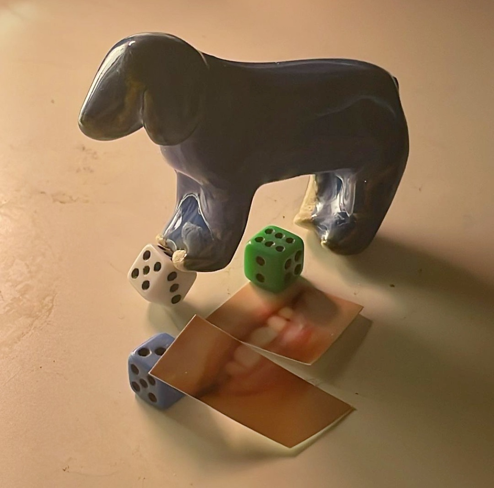

pika- my dog, pika, is living with my mom in tehran now. He is the dearest in our hearts. When i moved to new york, i made my first object in ceramics; a little pika.
three dice- i got the three dice in a bazaar back home; since then, they have remained in my pocket.
the smile- i found my smile in the torn pieces of a photograph.
pika, three dice and the smile is an ongoing series of everyday arrangements with these pieces.